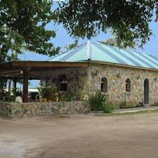
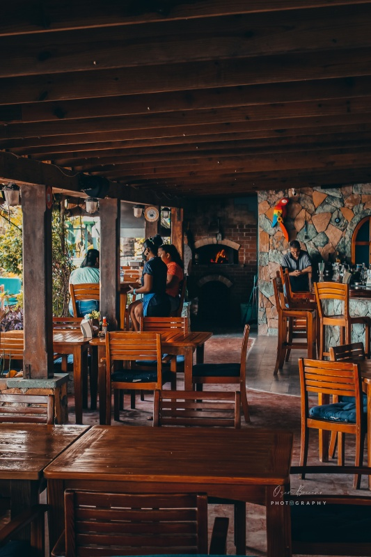
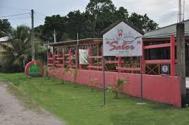
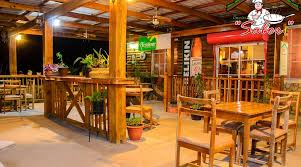
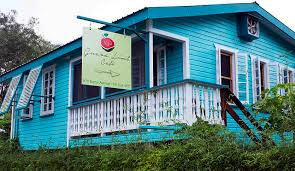
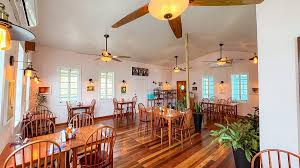

Discover the culinary treasures of our Northern and Western districts. We invite you to experience the authentic flavors that define our local culture from Corozal to Cayo.
A serene coastal getaway with beautiful bay views and rich Mestizo roots.
Coastal dining at its finest, known for fresh seafood and international fusion.


The "Sugar City" is a cultural hub famous for its vibrant street food scene.
A local favorite offering traditional Mestizo recipes in a warm environment.


Heart of the Maya world, where jungle adventures lead to incredible meals.
An award-winning eatery focused on fresh, organic, farm-to-table cuisine.

